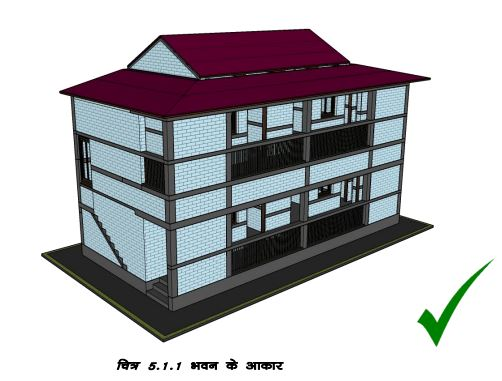
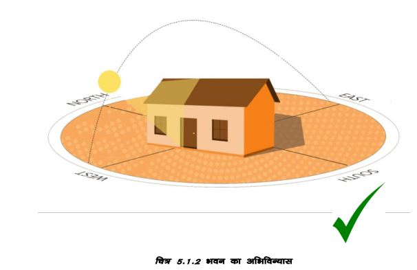

अपने घर के नक्षे की योजना बनाते समय कुछ दिशानिर्देश ध्यान में रखने चाहिए।
भूकंप के दौरान सरल घर सबसे बेहतर प्रदर्शन करते हैं। सुनिश्चित करें कि आपकी इमारत का आकार सरल हो। इमारत का आकार चौकोर या आयताकार होना चाहिए। यदि ऐसा न हो, तो अपने घर को दो या अधिक सरल आकारों में विभाजित करें और उनके बीच अंतराल प्रदान करें।
इमारत को उत्तर-दक्षिण दिशा में बनाना बेहतर है। लंबी दीवार उत्तर-दक्षिण अक्ष पर होनी चाहिए।
इमारत की लंबाई उसकी चौड़ाई के मुकाबले बहुत अधिक नहीं होनी चाहिए। (लंबाई और चौड़ाई का अनुपात 2ः1 से अधिक नहीं होना चाहिए या स्थानीय क्षेत्र के मानदंडों के अनुसार होना चाहिए)।
अलग-अलग खंडों के बीच अंतराल प्रदान करके छोटे खंडों में बड़ी इमारत का निर्माण करना बेहतर होता है।
क षैतिज और ऊर्ध्वाधर दोनों तरह से की गई, इमारत भूकंप के दौरान बेहतर प्रदर्शन करती है।